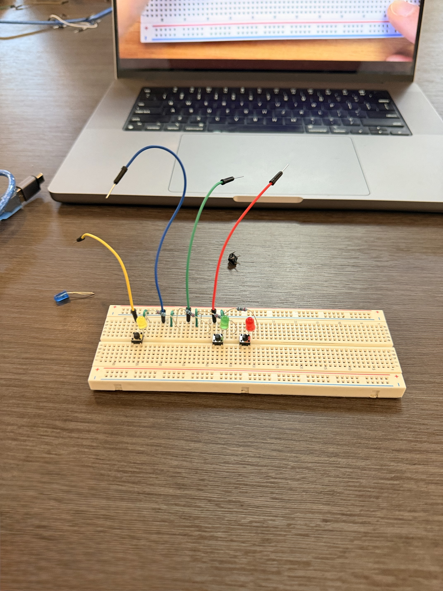
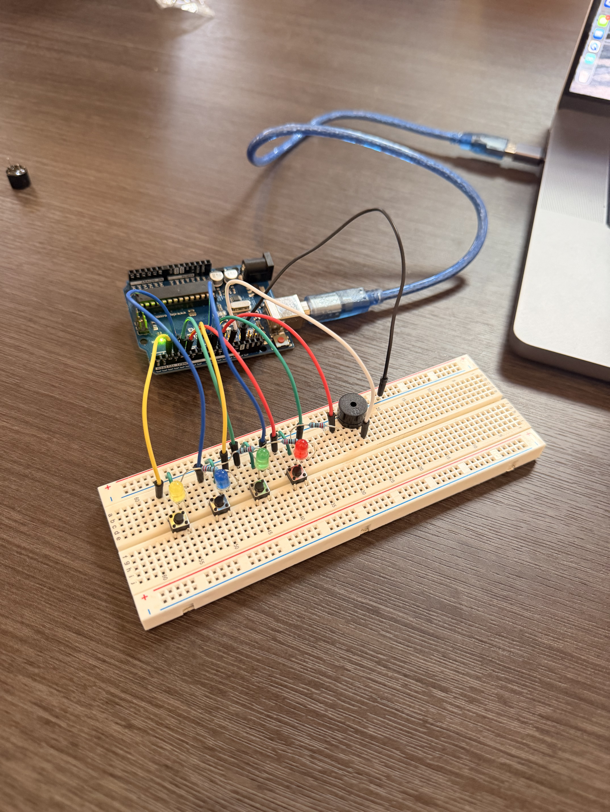
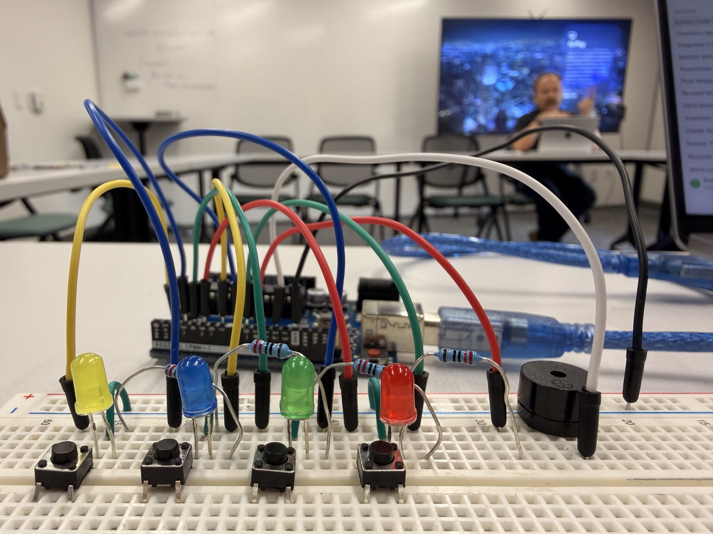
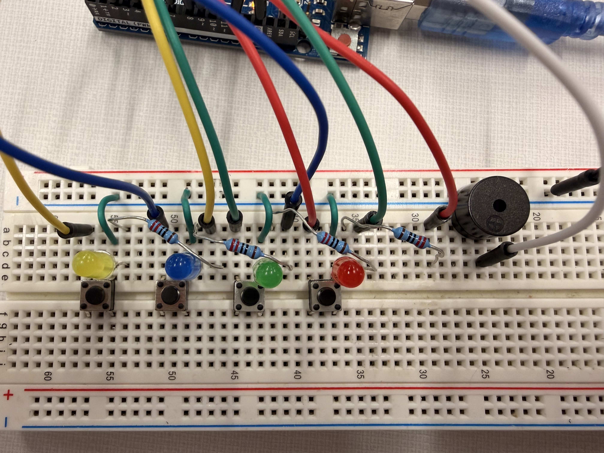

Arduino Light Memory Game
Innovator Journal | Technology & Innovation — Unit 1
Project Overview
For this project, I built an Arduino memory game that challenges players to remember and repeat a sequence of lights. The game uses LEDs, push buttons, resistors, a speaker, a breadboard, and an Arduino board. Every round, the player has to remember the sequence and press the corresponding buttons in the correct order.
My goal was to create a working electronic game while learning more about circuits, coding, and how hardware and software work together.
My Starting Point
I was interested in learning more about coding and electronics, but I did not have much experience building a circuit with this many different components. I had to learn how to connect the components correctly and make sure the code matched the physical circuit.
I followed a YouTube tutorial to help me understand how to build the game and program the Arduino.
Components and Setup
The project required several electronic components, including LEDs, push buttons, resistors, a speaker, jumper wires, a breadboard, and an Arduino. Each component had a different job.
- LEDs: Display the sequence the player needs to remember.
- Push buttons: Let the player enter their answer.
- Resistors: Help limit the electrical current through the LEDs.
- Speaker: Plays tones during the game.
- Breadboard: Allows the components to connect without soldering.
- Arduino: Runs the code and controls the game.
Setting up the circuit was harder than I expected because the placement of the wires and components mattered. Even a small wiring mistake could stop part of the game from working.
Building and Debugging
At first, I connected some of the wires incorrectly, so I had to go back and restart parts of the circuit. This taught me that following instructions carefully and checking each connection is important when working with electronics.
One of my biggest problems was that the yellow LED would not work. I checked the circuit and eventually moved its resistor one position closer on the breadboard. After that, the yellow LED worked.
I also had trouble uploading the code from my laptop to the Arduino. John Deng helped me get the laptop connected to the Arduino so I could upload the program. Steven also helped me troubleshoot the lights and check the circuit.
These problems taught me to test individual parts, look closely at the wiring, and ask for help when I could not figure out what was wrong.
Project Photos
These photos show different parts of my building process.

Beginning to assemble the circuit and arrange the electronic components.

Looking at the components and how they are arranged on the breadboard.

Connecting the circuit to the correct Arduino pins so the board can control the game.

Examining the wiring and component connections while working toward a functional circuit.
Project Demo
Watch the demo below to see my Arduino memory game in action, including its lights, buttons, and sounds.
How the Code Works
The Arduino code randomly chooses one of four LEDs to add to the sequence. It plays the sequence using lights and sounds, then waits for the player to repeat it with the push buttons.
If the player enters the correct sequence, the game continues and the sequence gets longer. If the player presses the wrong button, the game plays a game-over sound and resets the round. The code also includes sounds to celebrate progressing through the game.
Click to view the full Arduino code
#define NOTE_C4 262
#define NOTE_E4 330
#define NOTE_G4 392
#define NOTE_C5 523
#define NOTE_CS5 554
#define NOTE_D5 587
#define NOTE_DS5 622
#define NOTE_E5 659
#define NOTE_G5 784
const byte buttonPins[] = {2, 3, 4, 5};
const byte ledPins[] = {7, 8, 9, 10};
#define SPEAKER_PIN 12
#define MAX_GAME_LENGTH 100
const int gameTones[] = {
NOTE_C4, NOTE_E4, NOTE_G4, NOTE_C5
};
byte gameSequence[MAX_GAME_LENGTH] = {0};
byte gameIndex = 0;
void setup() {
Serial.begin(9600);
for (byte i = 0; i < 4; i++) {
pinMode(ledPins[i], OUTPUT);
pinMode(buttonPins[i], INPUT_PULLUP);
}
pinMode(SPEAKER_PIN, OUTPUT);
randomSeed(analogRead(A0));
}
void lightLedAndPlayTone(byte ledIndex) {
digitalWrite(ledPins[ledIndex], HIGH);
tone(SPEAKER_PIN, gameTones[ledIndex]);
delay(300);
digitalWrite(ledPins[ledIndex], LOW);
noTone(SPEAKER_PIN);
}
void playSequence() {
for (int i = 0; i < gameIndex; i++) {
byte currentLed = gameSequence[i];
lightLedAndPlayTone(currentLed);
delay(50);
}
}
byte readButtons() {
while (true) {
for (byte i = 0; i < 4; i++) {
byte buttonPin = buttonPins[i];
if (digitalRead(buttonPin) == LOW) {
return i;
}
}
delay(1);
}
}
void gameOver() {
Serial.print("Game over! your score: ");
Serial.println(gameIndex - 1);
gameIndex = 0;
delay(200);
tone(SPEAKER_PIN, NOTE_DS5);
delay(300);
tone(SPEAKER_PIN, NOTE_D5);
delay(300);
tone(SPEAKER_PIN, NOTE_CS5);
delay(300);
for (byte i = 0; i < 10; i++) {
for (int pitch = -10; pitch <= 10; pitch++) {
tone(SPEAKER_PIN, NOTE_C5 + pitch);
delay(5);
}
}
noTone(SPEAKER_PIN);
delay(500);
}
bool checkUserSequence() {
for (int i = 0; i < gameIndex; i++) {
byte expectedButton = gameSequence[i];
byte actualButton = readButtons();
lightLedAndPlayTone(actualButton);
if (expectedButton != actualButton) {
return false;
}
}
return true;
}
void playLevelUpSound() {
tone(SPEAKER_PIN, NOTE_E4);
delay(150);
tone(SPEAKER_PIN, NOTE_G4);
delay(150);
tone(SPEAKER_PIN, NOTE_E5);
delay(150);
tone(SPEAKER_PIN, NOTE_C5);
delay(150);
tone(SPEAKER_PIN, NOTE_D5);
delay(150);
tone(SPEAKER_PIN, NOTE_G5);
delay(150);
noTone(SPEAKER_PIN);
}
void loop() {
gameSequence[gameIndex] = random(0, 4);
gameIndex++;
if (gameIndex >= MAX_GAME_LENGTH) {
gameIndex = MAX_GAME_LENGTH - 1;
}
playSequence();
if (!checkUserSequence()) {
gameOver();
}
delay(300);
if (gameIndex > 0) {
playLevelUpSound();
delay(300);
}
}What I Learned
This project helped me understand how coding and electronics work together. Writing the code was only one part of the process; the physical circuit also had to be wired correctly for the program to work.
I learned that debugging takes patience. When something did not work, I had to check the wiring, test different solutions, and keep trying instead of giving up immediately. I also learned how useful collaboration can be when solving technical problems.
Real-World Applications and Improvements
A memory game like this could be used to help children practice memory, attention, and pattern recognition in an interactive way. Lights and sounds make the activity more engaging than simply looking at a written sequence.
If I improved the project, I could add clearer instructions, different difficulty settings, and more feedback for the player. I could also make the game easier to understand for someone playing it for the first time.
Final Reflection
Overall, this project showed me that building something electronic requires both technical skills and problem-solving. I ran into issues with the wiring, the yellow LED, and uploading the code, but I was able to work through those challenges with testing and help from others.
My biggest takeaway was that mistakes are part of the building process. Each problem gave me a chance to understand the circuit better and improve my troubleshooting skills.